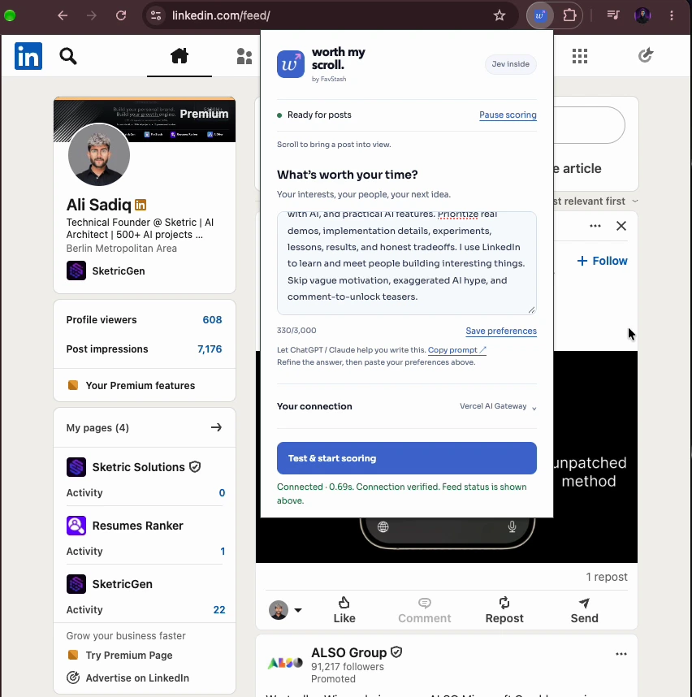
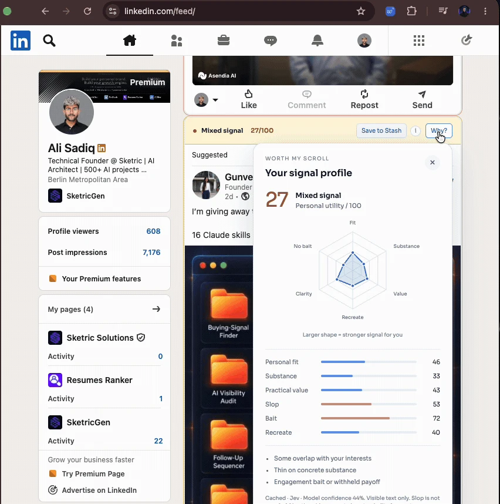

Tell it what you’re here for.
Type your interests, the people you want to meet, and the content you’d rather skip. Change your focus whenever you like.
“Builders shipping AI products. Real demos, useful details, honest tradeoffs. Less hype, please.”
YOUR FEED. YOUR KIND OF INTERESTING.
Your next great idea is somewhere in your LinkedIn feed. Find it faster.
Real-time post ratings. Ultra-low running costs. Tell Worth My Scroll what matters to you, and Jev highlights the signal as you scroll.
A thousand posts. About four cents.Est. ↗
MIT licensed · Local Chrome install · Your own Jev key

A FILTER WITH YOUR TASTE
A founder, a designer, and a researcher can read the same post and get something different from it. Start with what matters to you.
Type your interests, the people you want to meet, and the content you’d rather skip. Change your focus whenever you like.
Soft green, amber, and red highlights bring personal relevance and quality into view. Posts stay in your feed. You stay in control.
Open a visual breakdown of fit, substance, value, filler, engagement bait, and potential for an original angle of your own.
FROM AN ACTUAL SCROLL
Set your preferences, scroll through highlighted posts, then open “Why?” to see the signal behind a rating.
A 9-second look at Worth My Scroll on LinkedIn: your preferences, live feed highlights, and a “Why?” breakdown.
Autoplay · 9-second loop

GOOD IDEAS DESERVE MORE THAN A LIKE
Save the inspiration. Find your own angle. Make something worth sharing.
Click Save to Stash beside a rating. FavStash opens with the link and an inspiration note filled in. Choose a collection and confirm your save—even if you need to sign in first.
Your LinkedIn finds join saves from Instagram, TikTok, and YouTube in one searchable home for your AI agent.
Meet FavStashSave to a collection for your next project, campaign, or content idea.
Connect FavStash through MCP. Ask your AI to search your stash by keyword or topic.
Build an original draft around your experience, evidence, and point of view.
Review the draft and timing. Your agent can schedule or publish through supported FavStash connections.
FavStash account and connected platforms required for saving and publishing. Recreate scores suggest potential; they don’t predict virality.
FAST ENOUGH FOR A SCROLL. CHEAP ENOUGH FOR EVERY DAY.
That’s an estimate at 1,000 input tokens per post, using the September 23, 2026 Vercel Gateway pricing snapshot. Actual cost varies with post length, preferences, and provider pricing. Your popup shows an estimate based on your usage.
Jev returns structured scores as you browse. No separate chat or long generated answer to wait for. Cached ratings appear without another evaluation; fresh scores depend on your connection and provider response.
Bring a funded Jev or Vercel AI Gateway key. Use ChatGPT or Claude to help write your preferences if you like; their API keys aren’t required.
Your key stays in your Chrome profile and is sent only to your selected provider. Scoring sends visible post text and preferences to that provider. No extension analytics or telemetry.
A SMALL TOOL FOR A BETTER HABIT
Built as a hobby project. MIT licensed. Ready to make your own.
You'll need Node.js 22+, Chrome, and a Jev or Vercel AI Gateway key with evaluation access and credits.
chrome://extensions, turn on Developer mode, choose Load unpacked, and select dist.git clone https://github.com/alisadiq-ai/worth-my-scroll.git
cd worth-my-scroll
npm ci
npm run buildA FEW GOOD QUESTIONS
Worth My Scroll is an open-source AI productivity tool and Chrome extension for LinkedIn. It uses Jev to rate visible posts against your interests, highlight useful content, and flag low-value filler. It adds context without removing posts.
No. “Slop” means low-value filler, vague hype, or engagement bait. Useful writing can be AI-assisted, and empty writing can be human. Ratings are subjective, not proof of authorship or fact-checking.
Visible post text and the preferences you supply. The extension doesn’t watch videos, inspect images, expand hidden text, or fetch linked articles. A great visual demo with a short caption may be underrated.
Neither is required to score your feed. Scoring uses your Jev/TypeSafe or Vercel AI Gateway key. A FavStash account is needed only when you choose to save content there. Gateway has been tested with live requests; live verification of the direct Jev adapter is still pending.
No. Your API key belongs to your own TypeSafe/Jev or Vercel account, and usage is billed there. The extension stores its copy in your Chrome profile—not in a Worth My Scroll account, FavStash account, or Chrome Sync. You don’t provide a LinkedIn login token or JWT.
By default, the key stays in extension session memory and clears when Chrome restarts or the extension is reloaded, disabled, or updated. “Remember key on this device” optionally saves it in local extension storage. That saved copy is not encrypted by the extension and is not a password vault. Leave Remember off for less persistent exposure.
The extension sends requests directly over HTTPS to your selected provider: TypeSafe for direct Jev, or Vercel AI Gateway for Jev through the Gateway. The key goes only to that provider for authentication. Worth My Scroll and FavStash do not receive it, and it is not inserted into LinkedIn’s page.
After you accept the data notice and enable scoring, visible post text and your preferences are sent for provider processing. Provider retention and logging policies apply; this is not offline AI. There is no extension-operated backend, analytics, or telemetry. Save to Stash separately forwards the selected public link and inspiration note to FavStash when you click it, never your key. Read the full privacy details.
Use a dedicated provider key, leave Remember off, and set provider spending limits where available. The extension restricts key access to its trusted contexts, but a compromised device or malicious extension update can still put it at risk. Removing the key clears our extension’s copy; revoke it with the provider to invalidate it. The source is open for inspection, but it has not had an independent security audit.
Not yet. The current version is installed locally from source using Chrome’s Developer mode. A future Web Store release will need Google’s review.
No. Worth My Scroll is an independent, experimental project. LinkedIn’s site and policies can change and affect compatibility. Review LinkedIn’s third-party software policy before use.